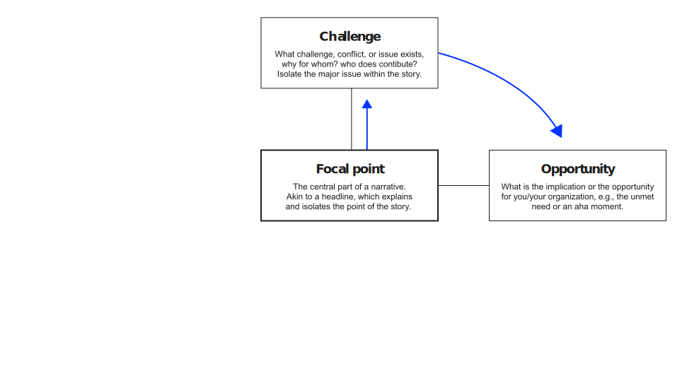
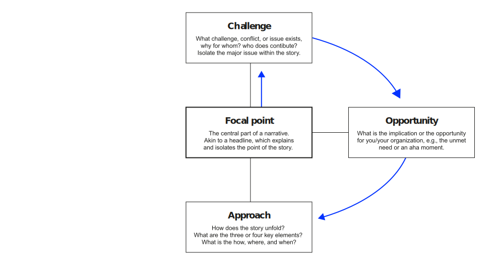
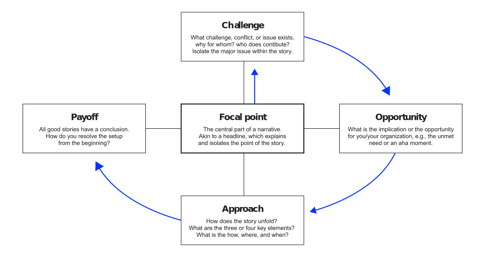

Storytelling
How to communicate with maximum impact?
Neu-Ulm University of Applied Sciences
February 13, 2026
Introduction
Today’s session
- Storytelling circle 15 min
- Storytelling × leadership 25 min
- Story structure & persuasion 25 min
- Break
- Storytelling practice 30 min
- Course reflection 25 min
- Closing 10 min
Learning objectives
After completing this unit, you will be able to:
- Explain why storytelling is a leadership necessity and identify the four truths of effective stories.
- Apply Aristotle’s persuasion model (ethos, pathos, logos) to structure compelling narratives.
- Adapt stories for different stakeholder audiences using the IAP2 engagement spectrum.
- Create a narrative using story elements and a narrative map structure.
Activation
Story check-in
Share the leadership story you reflected on for homework.
Form groups of 4–5. Each student tells their leadership story to the group in 60 seconds.
Then vote for the story you liked best.
05:00
Pair share
Prepare to perform for the plenary.
03:00
Groups: coach your storyteller. What could make the story even more compelling?
Plenary debrief
What elements did the most compelling stories have in common?
05:00
Storytelling × leadership
Why storytelling matters
The most powerful person in the world is the storyteller.
The storyteller sets the vision, values and agenda of an entire generation that is to come. Steve Jobs
The leader as storyteller
For the leader, storytelling is action oriented — a force for turning dreams into goals and then into results. Guber (2007)
Great storytelling does not conflict with truth. In the business world and elsewhere, it is always built on the integrity of the story and its teller.
Four truths of effective stories
Guber (2007) distilled four kinds of truth found in an effective story:
- Truth to the teller: what a storyteller says must be consistent in their heart and mind
- Truth to the audience: the storyteller has to understand and recognize what the audience wants and needs and address those wants and needs
- Truth to the moment: a storyteller adapts a story to the context in which the story is told
- Truth to the mission: a storyteller is “devoted to a cause beyond self.”
Truth to the audience
How does the audience change the story?
Think about one message (e.g., “We need to invest in AI”):
- How would you tell this to the CEO?
- How would you tell this to the engineering team?
- How would you tell this to employees worried about their jobs?
05:00
Truth to the moment
Truth to the moment requires the behavioral complexity:
reading the situation and adjusting your approach accordingly.
- A story that inspires during a product launch may fall flat during a crisis.
- A narrative of ambition works when the team is energized.
- A story of resilience works when the team is exhausted.
The adaptive leader reads the moment and adjusts.
Story structure
Layers of conviction
Aristotle argued that a good speech contains three types of persuasion:
Ethos, pathos, logos
- Logos appeals to the audience’s reason, building up logical arguments.
- Ethos appeals to the status or authority so that listeners are more likely to trust the speaker.
- Pathos appeals to the emotions, e.g., trying to make the audience feel angry or sympathetic.
Story elements
Behind good stories is a structure that forms the backbone. The essential story elements:
Characters
Setup or conflict
Sequence of events (plot)
Resolution
Narrative map
A narrative map structures the story around five elements:





Example: Hudson River
Ric Elias had a front-row seat on Flight 1549, the plane that crash-landed in the Hudson River in New York in January 2009. What went through his mind?
Narrative map — Hudson River
Storytelling practice
The edding marker pitch
Create and perform a story.
Imagine you work as an internal consultant at edding and you have developed a first-class innovation: a whiteboard marker that always works (built-in sensor that tells you when it is dry, a canister that makes recycling easier).
You have the opportunity to pitch the idea to the CEO and the board. You want to convince them to take a leap of faith.
Form teams of max. 2 students. Write your story using the narrative map structure. Be ready to perform it.
15:00
Narrative map — marker

Public speaking tips
Some advice on public speaking from David JP Phillips:
Audience adaptation
Same story, three audiences — live.
Return to the edding marker pitch. Imagine you will pitch to different stakeholders:
- The CEO and board — market potential, competitive advantage, financial returns
- The engineering team — technical feasibility, innovation challenge, professional pride
- End customers (facility managers) — reliability, cost savings, sustainability
What changes across versions? What stays the same?
08:00
Course reflection
The storyteller’s latticework
Storytelling is itself a mental model — perhaps the most fundamental one for leaders.
It is how we make sense of complexity, communicate vision, and move people to action. Every model in your latticework becomes more powerful when you can tell its story — explain it clearly, connect it to lived experience, and inspire others to apply it.
Course reflection
What will you take with you?
05:00
Closing
Your latticework
The latticework is complete — for now.
Remember Parrish’s counsel: learn, apply, reflect. This is a lifelong project. The compound interest of mental models accumulates over decades.
Closing quote
People will forget what you said, people will forget what you did, but people will never forget how you made them feel.
Maya Angelou